정보통신산업기사 (2011-03-20 기출문제)
1과목: 디지털전자회로
1. B급 푸시풀 전력증폭기(push-pull power amp)에서 제거되는 것은?
- 기본파
- 제 2고조파
- 제 3고조파
- 제 5고조파
(정답률: 81%)

2. 병렬전압 궤환 증폭기의 입력 임피던스는 궤환이 없을 때와 비교하면?
- 증가한다.
- 증가 후 감소한다.
- 감소한다.
- 변함이 없다.
(정답률: 55%)
3. 그림과 같이 입력측 Vi에 진폭이 8[V]인 정현파를 가했을 때 출력파형(Vo)은?
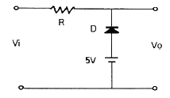
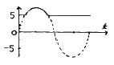
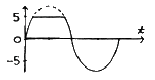
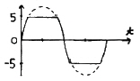
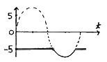
(정답률: 61%)
4. 아래와 같은 4변수 카르노도를 간략화 했을 때 논리식은?
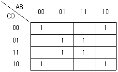
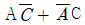
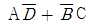
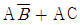
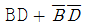
(정답률: 81%)
5. 다음 중 클리퍼 회로의 설명으로 옳은 것은?
- 입력 파형을 주어진 기준전압 레벨 이상 또는 이하로 잘라내는 회로
- 일정한 레벨 내에서 신호를 고정시키는 회로
- 특정 시각에 발진 동작을 시키는 회로
- 안정 상태와 준안정 상태를 번갈아 동작하는 회로
(정답률: 91%)
6. 하틀리(Hartley)형 발진회로에서 콜렉터와 이미터간의 리액턴스는?
- 저항성
- 유도성
- 용량성
- 유도성+용량성
(정답률: 75%)
7. 다음 중 FM 검파기의 종류가 아닌 것은?
- 비 검파기
- 복동조형 검파기
- Foster-Seeley형 검파기
- 다이오드 검파기
(정답률: 67%)
8. 다이오드를 사용한 정류회로에서 과부하전류에 의하여 다이오드가 파손될 우려가 있을 경우 이를 방지하기 위한 방법으로 가장 적합한 것은?
- 다이오드를 병렬로 추가한다.
- 다이오드를 직렬로 추가한다.
- 다이오드 양단에 적당한 값의 저항을 추가한다.
- 다이오드 양단에 적당한 값의 콘덴서를 추가한다.
(정답률: 60%)
9. 다음 그림과 같은 연산회로의 명칭은?
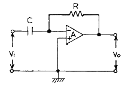
- 가산기
- 미분기
- 적분기
- 감산기
(정답률: 83%)
10. 3개의 T 플립플롭이 직렬로 연결되어 있다. 첫 단에 1000[Hz]의 입력신호를 인가하면 마지막단 플립플롭의 출력신호는?
- 3000[Hz]
- 333[Hz]
- 167[Hz]
- 125[Hz]
(정답률: 68%)
11. 그림과 같은 연산 증폭기의 출력전압 Vo는? (단, R1=2[MΩ], R2=1[MΩ], C1=1[μF])
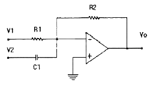
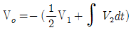
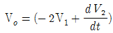
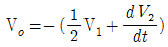
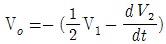
(정답률: 67%)
12. LC 동조 발진기에 비해 수정 발진기의 특징에 대한 설명으로 틀린 것은?
- 안정도가 높다.
- Q가 크다.
- 발진 주파수를 가변하기가 곤란하다.
- 저주파 발진기로 적합하다.
(정답률: 59%)
13. Diode 직선검파 회로에서 변조도 62[%], 진폭 10[V]인 피변조파(AM)가 인가되었을 때 출력 부하에 나타나는 실효치는? (단, 검파효율은 73[%]이다.)
- 약 3.2[V]
- 약 1.64[V]
- 약 0.32[V]
- 약 016[V]
(정답률: 36%)
14. 다음 중 단상 전파 정류회로의 무부하시 정류효율(η)은?
- 약 24[%]
- 약 36[%]
- 약 52[%]
- 약 81[%]
(정답률: 66%)
15. 오실로스코프를 이용하여 진폭 변조된 파형을 관측한 결과 최대진폭이 8[V]이고 최소진폭이 2[V]로 측정되었다면 변조도(m)은?
- 20[%]
- 25[%]
- 40[%]
- 60[%]
(정답률: 55%)
16. 그림과 같은 증폭회로에서 출력전압 Vo는?
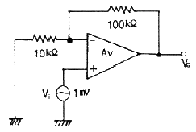
- 11[mV]
- 51[mV]
- 101[mV]
- 110[mV]
(정답률: 76%)
17. 다음의 논리함수를 간략화한 결과는?
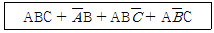
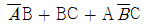
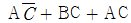
- B + AC
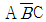
(정답률: 73%)
18. 트랜지스터의 스위칭 동작에서 turn-off 시간은?
- 지연시간(td)
- 지연시간(td)+상승시간(tr)
- 축적시간(ts)
- 축적시간(ts)+하강시간(tf)
(정답률: 87%)
19. 진폭변조에서 신호파 xs(t)=4 cos 2πfst, 반송파 xc(t)=5 cos 2πfct 로 주어질 때 피변조파 x(t)를 나타낸 것은?
- x(t) = 4(1+0.8 sin 2πfst)cos2πfct
- x(t) = 4(1+0.8 cos 2πfst)cos2πfct
- x(t) = 5(1+0.8 sin 2πfst)cos2πfct
- x(t) = 5(1+0.8 cos 2πfst)cos2πfct
(정답률: 63%)
20. 중심 주파수가 455[kHz]이고, 대역폭이 10[kHz]가 되는 단동조 회로를 만들려면 이 회로의 Q는?
- 42.3
- 45.5
- 52.3
- 55.4
(정답률: 87%)
2과목: 정보통신기기
21. 위성통신에서 사용하는 다원접속 방식이 아닌 것은?
- 주파수분할방식
- 시분할방식
- 파장분할방식
- 코드분할방식
(정답률: 64%)
22. CATV의 구성요소 중 각 채널의 방송신호를 중계전송망으로 송출하기 위한 센터의 핵심 역할을 하는 것은?
- 헤드엔드
- 컨버터
- 원격조정기
- 가입자설비
(정답률: 83%)
23. ITU-T X 시리즈 권고 인터페이스 규약 중 X.21에 해당하는 것은?
- 공중 데이터망에서의 국제적인 사용자 서비스 클래스의 규약
- 공중 데이터망의 국제적인 사용자 설비의 규약
- 공중 데이터망에서의 동기식 전송을 위한 DTE와 DCE 간의 인터페이스 규약
- 공중 데이터망에서 패킷모드로 동작하는 단말기의 DTE와 DCE 간의 인터페이스 규약
(정답률: 68%)
24. 다음 중 PBX(Private branch exchange)의 기능과 밀접한 것은?
- 문서 도형의 작성
- 데이터의 처리
- 전화교환
- 정보의 보존 및 검색
(정답률: 72%)
25. 다음 중 송신기의 성능지수에 해당하는 것은?
- 충실도
- 안정도
- 선택도
- 점유주파수 대역폭
(정답률: 58%)
26. PCM(Pulse Code Modulation)에 대한 설명으로 틀린 것은?
- 아날로그 데이터를 디지털 신호로 변환하여 전송하고 재생하는 방식이다.
- 표본화, 양자화, 부호화, 복호화 단계로 구성된다.
- PCM 잡음에는 양자화잡음 등이 있다.
- 표본화 주파수를 원신호 최소주파수의 1/2 이하로 하는 나이키스트(Nyquist) 이론을 바탕으로 한다.
(정답률: 76%)
27. DTE와 DCE 간의 인터페이스 특성 중 전기적인 특성에 관한 것은?
- 상호 접속회로의 커넥터 핀수와 치수 등을 규정한 것이다.
- 상호 접속회로의 전압레벨과 관계되는 특성을 규정한 것이다.
- 상호 접속회로에 나타나는 정보신호와 관계된 특성을 규정한 것이다.
- 상호 접속회로에 나타나는 제어신호와 관계된 특성을 규정한 것이다.
(정답률: 60%)
28. 뉴미디어를 방송계, 통신계, 패키지계로 구분할 때 통신계에 해당하지 않은 것은?
- VRS
- LAN
- 위성방송
- 비디오텍스
(정답률: 44%)
29. CATV의 센터설비에서 헤드엔드의 주요 기능과 거리가 먼 것은?
- 프로그램의 검색 및 편집
- 변조
- TV 신호처리
- Pilot 신호발생
(정답률: 73%)
30. 이동통신 시스템의 구성 요소 중 이동전화 교환국의 기능이 아닌 것은?
- 핸드오버 및 로밍 기능
- 단말기와 이동전화 교환국을 연결하는 기능
- PSTN 교환기와 연결할 수 있는 기능
- 기지국에 할당된 채널을 관리 통제하는 기능
(정답률: 52%)
31. 비디오텍스의 기술방식에서 점, 선, 호, 원, 다각형과 같은 기하학적 요소의 조합에 의해 표현되는 방식은?
- 알파 지오메트릭 방식
- 알파 스캔 방식
- 알파 모자이크 방식
- 알파 포토그래픽 방식
(정답률: 70%)
32. 다음 중 쌍방향 CATV의 응용분야와 가장 거리가 먼 것은?
- 홈뱅킹
- 문서의 전송
- 홈쇼핑
- 정보검색 서비스
(정답률: 67%)
33. 고속의 데이터 스트림을 두 개 이상의 저속 데이터 스트림으로 변환하여 음성대역 등의 변복조기를 통하여 전송하는 것은?
- 광대역 다중화기
- 역 다중화기
- 지능 다중화기
- 음성 다중화기
(정답률: 74%)
34. 다음 중 위성통신에서 지구국 안테나계의 성능지수란?
- 반송파대 잡음전력비
- 안테나의 수신 이득과 시스템 잡음의 비
- 안테나의 수신 이득과 수신 신호이득의 비
- 안테나의 수신 이득과 수신 시스템의 잡음온도의 비
(정답률: 49%)
35. 디지털 신호를 아날로그 전송회선에 전송 가능하도록 변환시켜주는 것은?
- DSU(Digital Service Unit)
- DCE(Data Circuit Terminating Equipment)
- CSU(Channel Service Unit)
- MODEM(Mudulator & Demodulator)
(정답률: 80%)
36. NTSC식 TV에서 영상신호와 음성신호의 변조방식은?
- 영상 : AM, 음성 : PM
- 영상 : AM, 음성 : FM
- 영상 : PM, 음성 : AM
- 영상 : FM, 음성 : FM
(정답률: 67%)
37. 다음 중 문자다중 방송을 의미하는 것은?
- TELEX
- TELETEX
- TELETEXT
- VIDEOTEX
(정답률: 71%)
38. 다음 중 EIA/RS-232C 25핀 커넥터의 접속핀 규격이 틀린 것은?
- 2번 : 데이터 송신(TXD)
- 3번 : 데이터 수신(RXD)
- 4번 : 송신 요구(RTS)
- 5번 : 신호용 접지(SG)
(정답률: 64%)
39. 다음 전송장비 중 다중화장비의 특징이 아닌 것은?
- 광통신에서는 파장분할 다중화가 적용된다.
- 두 개 이상의 신호를 결합하여 하나의 물리적 회선을 통하여 전송할 수 있는 시스템이다.
- 한 전송로의 데이터 전송시간을 일정한 시간폭으로 나누는 방식은 시분할 다중화이다.
- 입력측과 출력측의 전체 대역폭이 서로 다르다.
(정답률: 63%)
40. 다음 중 전(全)전자 교환기에서 가입자선 정합부의 기능이 아닌 것은?
- 가입자회선 수용
- 가입자 호출신호의 송출
- 가입자선 통화전류를 위한 급전
- 국간 신호처리
(정답률: 53%)
3과목: 정보전송개론
41. 표본화를 할 때, 오차가 발생하는 원인이 아닌 것은?
- 반올림 오차
- 절단 오차
- 엘리어싱 오차
- 신호대잡음비 오차
(정답률: 48%)
42. 표본화 주파수가 높은 의미와 관련없는 것은?
- 초당 샘플수가 많다는 것을 의미한다.
- 표본화 주기가 짧다는 것을 의미한다.
- 전송할 수 있는 정보의 양이 많아짐을 의미한다.
- 양자화 잡음이 줄어짐을 의미한다.
(정답률: 60%)
43. 정보전송 중 오류가 발생한 데이터 프레임만을 재전송하는 방식은?
- Go-Back-N ARQ
- Stop-and-Wait ARQ
- Selective-Repeat ARQ
- Adaptive ARQ
(정답률: 61%)
44. 다음 중 예측 양자화를 사용하지 않는 것은?
- DPCM
- DM
- PCM
- ADM
(정답률: 62%)
45. 광섬유의 굴절률이 전파하는 광의 파장에 따라 변화함으로써 생기는 분산은?
- 모드분산
- 재료분산
- 구조분산
- 도파로분산
(정답률: 44%)
46. 선로의 사용 주파수가 높아지면 나타나는 현상이 아닌 것은?
- 표피작용에 의해서 케이블의 저항이 증가한다.
- 근접작용에 의해서 케이블의 저항이 증가한다.
- 와류작용에 의해서 케이블의 저항이 증가한다.
- 도체와의 반작용 때문에 인덕턴스가 증가한다.
(정답률: 62%)
47. 다음 중 CDMA 시스템 설계시 용량을 증가시키기 위한 방법이 아닌 것은?
- 이동 전화장치의 송신출력을 고정시킨다.
- 주파수 재사용 효율을 높인다.
- 지향성 안테나를 사용한다.
- 기지국을 섹터화 한다.
(정답률: 47%)
48. 다음 중 STM-64의 광 정보 전송율은?
- 155[Mbps]
- 622[Mbps]
- 2.5[Gbps]
- 10[Gbps]
(정답률: 35%)
49. 다음 중 파장이 가장 짧은 주파수 대역은?
- VHF
- UHF
- SHF
- EHF
(정답률: 53%)
50. 다음 중 HDLC 프레임 구조에 포함되지 않는 것은?
- BCC
- FCS
- 주소부
- 제어부
(정답률: 60%)
51. 광섬유에서 전파하는 파장이 산란체에 의하여 산란되는 것으로 공진산란이라고도 하는 것은?
- Rayleigh 산란
- Brillounin 산란
- Mie 산란
- Raman 산란
(정답률: 57%)
52. 1200[baud]의 변조속도를 갖는 전송선로에서 신호 비트가 트리비트(tribit)이면, 전송속도[bps]는?
- 1200
- 2400
- 3600
- 4800
(정답률: 62%)
53. 다음 중 비연결형 전달계층 프로토콜에 해당되는 것은?
- UDP
- TCP
- FTP
- VT
(정답률: 56%)
54. 다음 중 가장 빠른 속도로 데이터를 전송할 수 있는 변조방식은?
- ASK
- FSK
- QPSK
- BPSK
(정답률: 70%)
55. 다음 중 CRC-16 생성다항으로 적합한 것은?
- X16+X4+X2+1
- X16+X12+X4+1
- X16+X15+X2+1
- X16+X15+X3+X1
(정답률: 54%)
56. 다음 중 DTE에서 사용되는 디지털 신호를 아날로그 전송회선에 전송 가능하도록 하는 것은?
- DSU
- CSU
- MODEM
- CCU
(정답률: 76%)
57. 다음 중 CDMA 이동통신에 이용되는 대역확산 방식이 아닌 것은?
- 주파수호핑
- 잡음호핑
- 직접시퀀스
- 시간호핑
(정답률: 42%)
58. 비동기식 전송과 동기식 전송에 대한 설명으로 옳지 않은 것은?
- 비동기식 전송에서 사용되는 클록은 상대측과 서로 독립적으로 운용된다.
- 동기식 전송에서 정보 전송형태는 블록 단위로 이루어진다.
- 비동기식 전송은 주로 저속의 전송속도에서 이용된다.
- 동기식 전송에서 동기는 글자단위로 이루어진다.
(정답률: 62%)
59. 광전송 시스템에서 광섬유를 통하여 전송된 광을 수신하기 위한 수광 소자에 해당하는 것은?
- 반도체 레이저(LD)
- 고체 레이저
- 발광 다이오드
- 에버런치 광검출기(APD)
(정답률: 42%)
60. ADSL 인터넷 회선에서 가장 큰 주파수 대역을 사용하는 것은?(오류 신고가 접수된 문제입니다. 반드시 정답과 해설을 확인하시기 바랍니다.)
- POTS
- 상향 스트림
- 하향 스트림
- 인밴드 시그널링
(정답률: 67%)
4과목: 전자계산기일반 및 정보설비기준
61. 다음은 NOR 게이트 진리표이다. 출력 X의 a, b, c, d 값으로 옳은 것은?
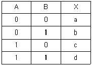
- a=0, b=0, c=0, d=1
- a=1, b=0, c=1, d=1
- a=0, b=1, c=0, d=0
- a=1, b=0, c=0, d=0
(정답률: 83%)
62. 10진수 -800을 팩(packed) 10진수 형식으로 바꾼 것은?
- 800D
- 800C
- -800
- +800
(정답률: 58%)
63. 전자계산기의 기본 논리회로는 조합 논리회로와 순서 논리회로로 구분된다. 이중 조합 논리회로에 해당되는 것은?
- RAM
- 2진 다운카운터
- 반가산기
- 2진 업카운터
(정답률: 70%)
64. 기억장치에 정보를 기억시키거나 기억된 내용을 읽어내는데 소요되는 시간은?
- access time
- seek time
- search time
- run time
(정답률: 77%)
65. 다음 중 인터럽트와 관련이 없는 것은?
- DMA
- 데이지체인
- 폴링
- 스택
(정답률: 45%)
66. 4개의 3×8 디코더(enable 입력 가짐)와 1개의 2×4 디코더로서 5×32 디코더를 설계하고자 할 때 필요한 입력의 개수와 enable의 수는?
- 2개, 5개
- 5개, 4개
- 2개, 4개
- 5개, 2개
(정답률: 53%)
67. 인출 사이클(fetch cycle)에 해당되지 않는 것은?
- 주기억장치의 지정 장소로부터 명령을 끄집어내어 CPU에 옮긴다.
- 프로그램카운터가 지정하는 메모리 주소에 저장된 명령어를 IR 레지스터로 읽어온다.
- 다음에 실행할 명령의 기억 장소를 세트시킨다.
- 실제로 명령을 이행한다.
(정답률: 64%)
68. 교착상태를 예방하기 위한 프로세스 수행 전에 모든 자원을 할당시켜주고, 자원이 점유되지 않은 상태에서만 자원을 요구할 수 있도록 하는 것은 교착상태의 필요충분조건 중 어떤 조건을 제거하기 위한 것인가?
- 상호배제
- 점유 및 대기
- 비선점
- 환형 대기
(정답률: 64%)
69. 원시 프로그램을 현재 수행중인 기종이 아닌 다른 기종에 맞는 기계어로 번역하는 것은?
- 프리프로세서
- 크로스 컴파일러
- 인터프리터
- 로더
(정답률: 54%)
70. 8비트 메모리 워드에서 비트패턴 (1110 1101)2는 "① 부호있는 절대치(signed magnitude), ② 부호와 1의 보수, ③ 부호와 2의 보수"로 해석될 수 있다. 각각에 대응되는 10진수를 순서대로 나타낸 것은?
- ① -109, ② -19, ③ -18
- ① -109, ② -18, ③ -19
- ① 237, ② -19, ③ -18
- ① 237, ② -18, ③ -19
(정답률: 50%)
71. 사업자의 교환설비로부터 이용자 방송통신설비의 최초의 단자에 이르기까지의 사이에 구성되는 회선은?
- 국선
- 분기선
- 구내선
- 분배선
(정답률: 87%)
72. 정보통신공사업을 영위하고자 할 경우의 절차로 옳은 것은?(관련 규정 개정전 문제로 여기서는 기존 정답인 3번을 누르면 정답 처리됩니다. 자세한 내용은 해설을 참고하세요.)
- 도지사의 허가를 받아야 한다.
- 방송통신위원회의 허가를 받아야 한다.
- 시ㆍ도지사에게 등록하여야 한다.
- 지식경제부장관에게 등록하여야 한다.
(정답률: 49%)
73. 방송통신위원회가 전기통신설비에 관한 전기통신 기본계획을 수립하고자 하는 경우, 미리 누구와 협의하여야 하는가?
- 국무총리
- 관계 행정기관의 장
- 대통령
- 기간통신사업자
(정답률: 68%)
74. 정보통신공사에 대한 감리원의 업무범위에 해당되지 않는 것은?
- 공사계획 및 공정표의 검토
- 공사 진척부분에 대한 조사 및 검사
- 재해 예방대책 및 안전관리의 확인
- 공사 시공의 분리도급 확인
(정답률: 51%)
75. 방송통신을 행하기 위하여 계통적ㆍ유기적으로 연결ㆍ구성된 방송통신설비의 집합체를 말하는 것은?
- 전기통신망
- 방송통신망
- 통신설비망
- 정보통신설비망
(정답률: 65%)
76. 전송설비의 기기 오동작 유도종전압이 얼마를 초과하거나 초과할 우려가 있는 경우에 전력유도 방지조치를 하여야 하는가?
- 1밀리볼트
- 1볼트
- 15볼트
- 60볼트
(정답률: 54%)
77. 다음 중 기간통신사업을 경영하고자 할 때 절차로 옳은 것은?
- 지식경제부장관에게 등록하여야 한다.
- 방송통신위원회에 신고하여야 한다.
- 방송통신위원회의 허가를 받아야 한다.
- 지식경제부장관에게 허가를 받아야 한다.
(정답률: 58%)
78. 다음 중 정보통신공사업의 등록을 할 수 없는 자는?
- 정보통신공사업법의 규정에 의하여 등록이 취소된 후 3년이 경과된 자
- 파산선고를 받고 복권된 자
- 정보통신공사업법의 규정에 의하여 벌금형의 선고를 받고 3년이 경과된 자
- 법인의 임원 중에 파산선고를 받고 복권되지 아니한 자가 있는 법인
(정답률: 67%)
79. 정보통신공사업자 외의 자가 시공할 수 있는 경미한 공사의 범위가 아닌 것은?
- 아마추어국의 무선설비 설치공사
- 간이무선국의 무선설비 설치공사
- 연면적이 650제곱미터인 건축물의 구내방송설비의 설비공사
- 허브 증설을 수반하는 8회선의 근거리통신망 선로의 증설 공사
(정답률: 59%)
80. 정보통신공사 발주자는 누구에게 공사의 감리를 발주하여야 하는가?
- 설계자
- 감리기술자
- 용역업자
- 정보통신공사업자
(정답률: 77%)